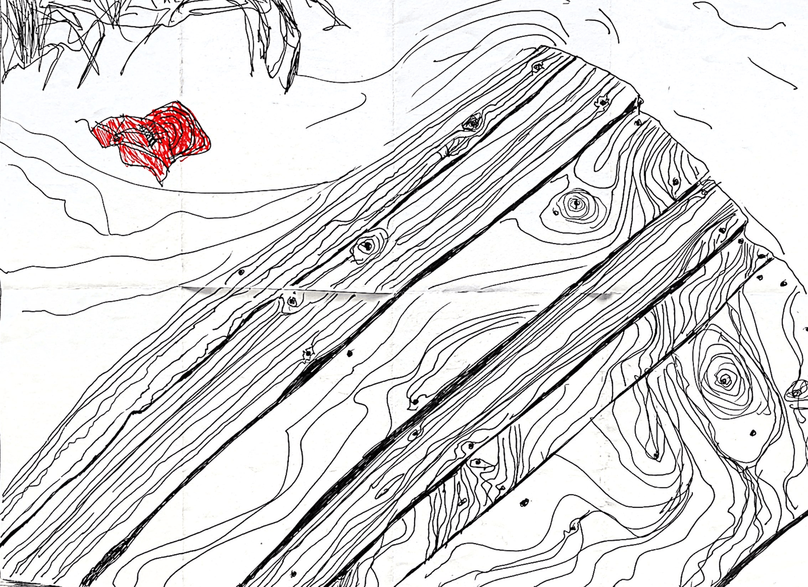

𖡡 готовлю съёмки в вологде
cкорее всего вы перешли по ссылке из зина, если нет, то вот пример зина в юморной версии:

иногда рисовал что-то с другой стороны, поглядите :)

если покруить зин, станет понятно, что я хочу снять 2 короткометражных фильма: авторскую драму в деревне и комедию в городе
теперь по порядку, кто мне в первую очередь нужен:
1) подростки 12-15 лет, пока сложно сказать, все выглядят по-разному
— меня интересуют фактурные ребята, которые хотели бы попробовать себя в кино и не имеют актерского или театрального опыта [я научу всему, что знаю]
— нужны типажы, то есть характеры, чтобы герои совпадали с ребятами:
а) девушка, смелая, общительная и самостоятельная
б) парень, скормный и тихий, но которому легко дается общение
в) парень, смелый, немного хулиган, который не боится проявляться как ему хочется
2) в идеале чтобы у подростков жили родственники в поселке воробъёво под вологдой, мы недалеко от поселка будем снимать
3) если интересно, то просто напишите мне по лююым контактам, там я попрошу фотографии и возможно записать небольшое видео с пробой или мы просто созвонимся или встретимся
4) если все складывается, то летом едем снимать фильм, после чего я буду готовить его на фестиваль в москву и петербург, будем ждать новостей и болеть за его фестивальную жизнь
5) через год, после фесивалей фильм опубликую и им можно будет свободно делиться с друзьями, а кадрами со съёмок я почти сразу со всеми поделюсь
заметка пока черновая, я постепенно буду добавлять сюда новую информацию
©︎ 15:54, 06.05.2026